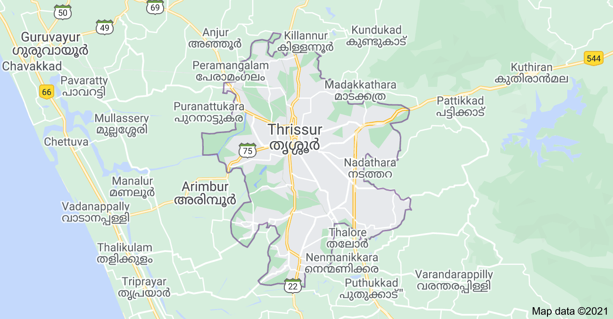

About Thrissur:-
The term Thrissur is the abbreviated anglicized form of the Malayalam word ‘THRISSIVAPERUR’ which means the town of the “SACRED SIVA”. The town is built on an elevated ground, at the apex of which is the famous “VADAKKUMNATHAN” Temple. A place of great antiquity, Thrissur was also known as “VRISHABHADRIPURAM” and “TEN KAILASAM” in ancient days. 
Athirapally and Vazhachal waterfalls
As you walk down the stone slabs that lead to the base of the Athirappilly waterfalls, a mysterious serenity overcomes you. It is Kerala's most famous and largest waterfall at over 80 ft high. The sight of the water crashing onto the ground leaves you with a sense of wonder at the sheer power and magnificence of nature. Located around 63 km from Thrissur district, it is a perennial picnic spot for people in the area and beyond. Its surrounding greenery is perfect for walks and picnics with loved ones. Lying at the entrance to the Sholayar forest ranges, it is a part of the Chalakudy River which calls the Western Ghats its home. Barely 5 km away is another family favourite, Vazhachal Waterfalls. These waterfalls became famous for not just their view but the endemic species found in the surrounding dense forests. Researchers have found four endangered species of the Hornbill here, the only place they thrive in the entire Western Ghats. Ornithologists attach great significance to this location and bird watchers can come across many rare and vibrant species in these parts.


Chimmini Dam
At a distance of 36 Kms from Thrissur, Chimmony Dam (also known as Chimmini Dam) is a picturesque dam constructed across Chimmony Puzha. Located in Echippara village (2 Kms), near Varandarappilly town, the dam is surrounded by the Chimmony Wildlife Sanctuary. Close to Peechi Dam and Mangalam Dam, the Chimmony Dam provided water supply for drinking and forming to the nearly by villages. Situated on Nelliyampathy slopes of Western Ghats, Chimmony Dam is a place with immense natural beauty. Boating is also available in the reservoir. It can be reached via Varandarappilly & Palappilly from Thrissur. It has limited public transportation. Best way to reach the dam is to hire private vehicle from Varandarappilly.